JavaScript feels like magic.
Ativos de marca
Todo o kit visual do Voodoo.js em SVG puro: paleta, mascote, logo, ilustrações e padrão de fundo. A página abre no tema escuro, igual à landing do projeto, e o botão acima troca para o claro.
Paleta oficial
Dez cores, e só. Para variações, use opacidade em cima delas em vez de inventar tons novos. As cores de marca são iguais nos dois temas: o que muda são fundos, contornos e texto.
#6D3BF5#9B7BFF#FF3D8B#FFB35C#2ED9A5#FF4D4D#14111F#2A2440#FBF7F2#EDE4D8Logo
São duas versões do logo horizontal, uma para cada fundo. Cada uma aparece abaixo sobre o fundo para o qual foi feita, e o cabeçalho desta página troca entre elas conforme o tema escolhido.
logo/voodoo-logo-dark.svg
Wordmark em creme pergaminho e sufixo em roxo claro. Use sobre fundo escuro.
logo/voodoo-logo.svg
Wordmark em tinta escura e sufixo em roxo. Use sobre fundo claro.
logo/voodoo-lockup.svg
Logo com o slogan, para capas e aberturas. O texto se adapta ao tema do sistema.
logo/voodoo-mark.svg
Símbolo isolado. Só cores de marca, então funciona nos dois temas. Legível a 16 px.
logo/favicon.svg
Ícone de aba. Traz o próprio fundo escuro, então serve em qualquer tema.
Mascote Vudu
Seis poses com a mesma anatomia: tecido de areia, costura em zigue-zague, olho de botão roxo à esquerda e magenta à direita, remendo no peito e alfinete mágico. O corpo é claro com contorno escuro, então o mascote se destaca nos dois temas.
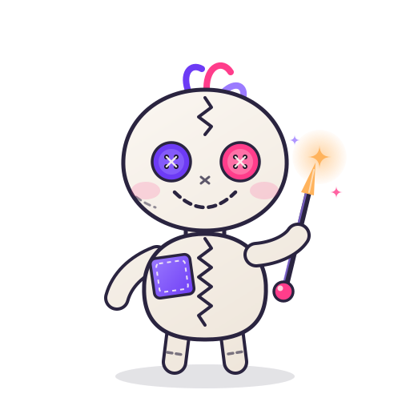
mascot/vudu.svg
Pose padrão, para apresentações e cabeçalhos.
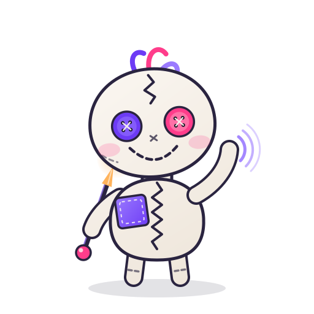
mascot/vudu-wave.svg
Aceno de boas-vindas, onboarding e docs.

mascot/vudu-happy.svg
Sucesso, build pronto, instalação concluída.
mascot/vudu-loading.svg
Carregamento. Tem animação CSS embutida.
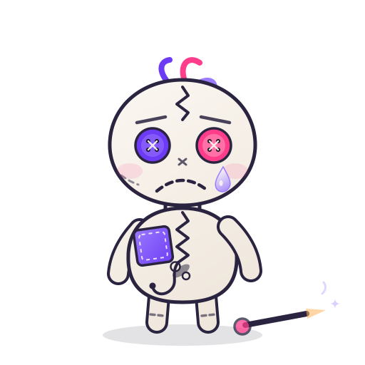
mascot/vudu-error.svg
Erro, falha de requisição, exceção.
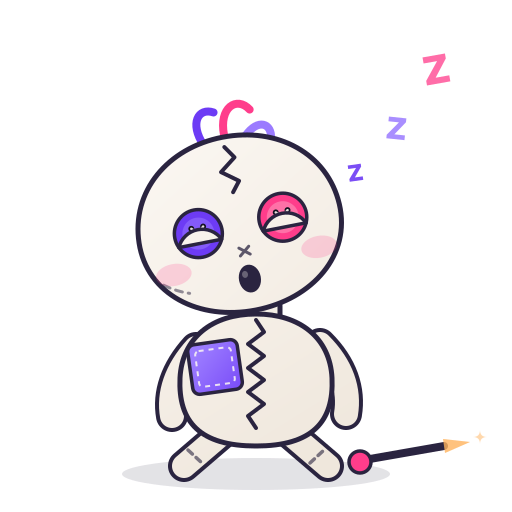
mascot/vudu-sleeping.svg
Ociosidade, sessão expirada, servidor parado.
Ilustrações
Cenas para documentação, página inicial e estados de interface. Cada arquivo traz um bloco de estilo interno que troca texto, contornos e massas escuras quando o tema é escuro.
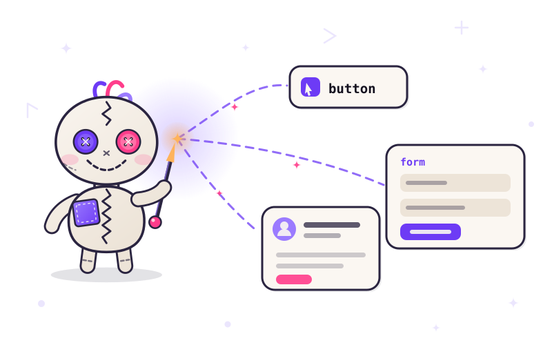
illustrations/hero.svg
Destaque da página inicial: Vudu conjurando um botão, um formulário e um card.
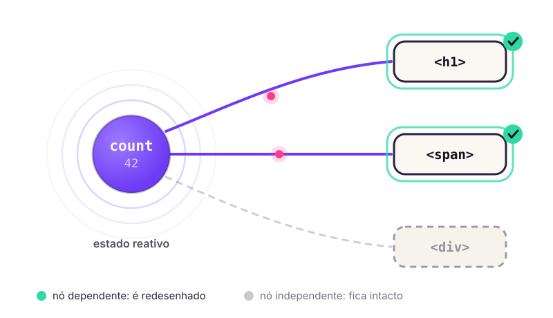
illustrations/reactivity.svg
Reatividade: só os nós que dependem do estado são redesenhados.
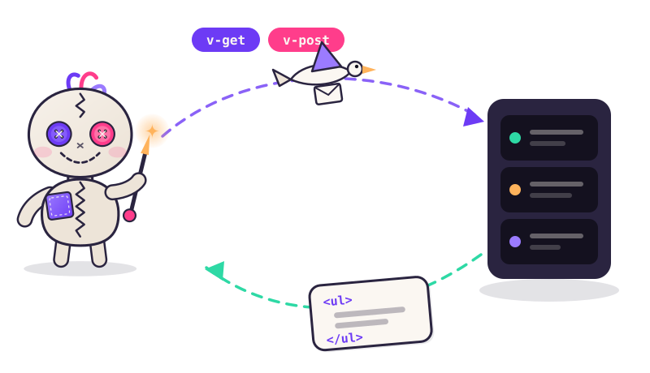
illustrations/http.svg
Ciclo de requisição com v-get e v-post.
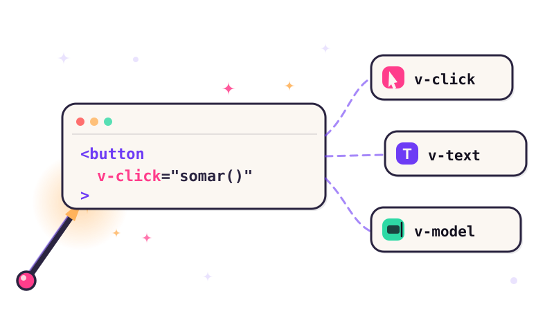
illustrations/directives.svg
Diretivas v-click, v-text e v-model saindo de uma tag.
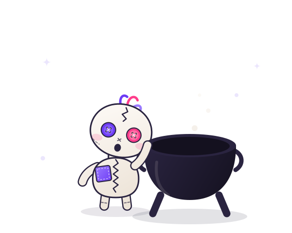
illustrations/empty-state.svg
Estado vazio de listas, buscas e painéis.
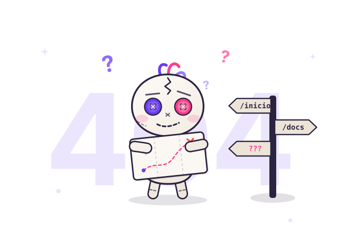
illustrations/404.svg
Página não encontrada.
Padrão de fundo
Textura repetível de runas. Aplique com background-repeat: repeat por baixo de seções de destaque. O cabeçalho desta página já usa ela.
patterns/runes-bg.svg
Tipografia
Se as famílias da marca não estiverem instaladas, as pilhas caem em fontes de sistema sem quebrar o layout.
JavaScript feels like magic.
O Voodoo.js liga o seu HTML ao estado com diretivas simples, sem etapa de build.
<button v-click="somar()" v-text="count"></button>
Nota sobre tema
Quando um SVG é carregado por <img>, o navegador resolve o @media (prefers-color-scheme) de dentro do arquivo pela preferência do sistema. Se você fixa o tema da página por conta própria, como esta galeria faz, prefira colar o SVG inline ou usar as duas versões separadas do logo, que é o caminho garantido.